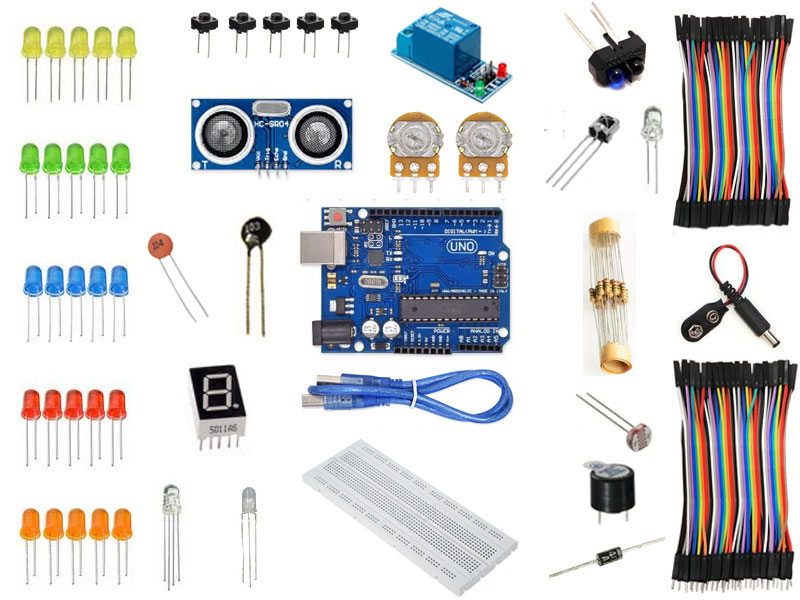

Robótica
Robótica é a ciência que estuda as tecnologias associadas a concepção e construção de robôs. Os robôs são mecanismos automáticos que utilizam de circuitos integrados para realizarem atividades e movimentos humanos simples ou complexos. A robótica tem grande aplicação em diversas áreas desde a produção industrial, medicina até atividades domésticas.
A ideia da criação de máquinas é antiga. Na Grécia Antiga, acreditava-se que os gregos e romanos já desenvolviam diferentes tipos de máquinas capazes de realizar movimentos automatizados. A edição 2021 do torneio de robótica “First Lego League” está começando e neste ano o tema da temporada deste ano é “Replay” e o tema geral é sedentarismo em crianças e adolescentes e o torneio tem como objetivo estimular a exploração científica.
Projeto de robótica
Arduino é uma placa eletrônica de código aberto baseada em hardware e software descomplicados. A plataforma Arduino faz a leitura de entradas e as transforma em saídas. Pode receber instruções usando uma linguagem de programação e um software apropriados. Basicamente, é formado por um controlador, entrada USB ou serial, e pinos digitais e analógicos de entrada e saída. Não tem conexão de rede, mas pode ser combinado a outros Arduinos, gerando extensões (shields) ou ser conectado a um computador hospedeiro.

AUTOMAÇÃO RESIDENCIAL ARDUINO
Cada vez mais presente nos mais diversos fóruns, a automação surge com o propósito de revolucionar o modo de viver em casa, garantindo melhor acessibilidade, segurança e qualidade de vida, por meio do emprego da tecnologia ao alcance das mãos. Já pensou que incrível seria controlar toda a sua casa com o simples toque da tela do seu celular? E se eu te dissesse que isto na verdade é algo extremamente simples e totalmente acessível para quem deseja realizar este investimento e controlar luzes, equipamentos, cortinas e demais equipamentos através de um simples aplicativo gratuito? Se você acha complicado acreditar nisto, saiba que você precisaria somente de um Arduino, alguns módulos reles e um módulo Bluetooth para realizar este projeto, demais equipamentos iriam depender da adaptação e do projeto que iria realizar.
KIT Arduino Uno R3 Básico
Se você precisa de um Kit para iniciar seus estudos com o Arduino, este Kit é perfeito para você, pois com o KIT Arduino Uno R3 Básico - Iniciante aprendiz - 168 peças será possível criar circuitos com o Arduino usando as entradas e saídas digitais assim como as entradas e saídas analógicas. Por ter um módulo relê de 1 canal, será possível fazer o acionamento de cargas de corrente alternada (até 250V) ou corrente contínua de até 10A. Com o KIT Arduino Uno R3 Básico - Iniciante aprendiz - 168 peças você poderá criar desde circuitos mais básicos como acionamento de LEDs e leituras de botões até circuitos mais avançados como leitura de distância leitura de temperatura. O KIT Arduino Uno R3 Básico - Iniciante aprendiz - 168 peças vai com jumpers e um protoboard para facilitar os seus testes.

Arduino – Automação usando celular
Já pensou que incrível seria controlar toda a sua casa com o simples toque da tela do seu celular? E se eu te dissesse que isto na verdade é algo extremamente simples e totalmente acessível para quem deseja realizar este investimento e controlar luzes, equipamentos, cortinas e demais equipamentos através de um simples aplicativo gratuito? Se você acha complicado acreditar nisto, saiba que você precisaria somente de um Arduino, alguns módulos reles e um módulo Bluetooth para realizar este projeto, demais equipamentos iriam depender da adaptação e do projeto que iria realizar.
Em 1961, o primeiro robô industrial foi instalado em uma montadora de automóveis em Nova Jersey, nos EUA. Ele erguia peças aquecidas de metal e as empilhava. Desde então, houve uma crescente adoção dessa tecnologia que surpreende pela precisão, velocidade e robustez. Em constante evolução, hoje há uma variedade enorme de robôs industriais aptos a auxiliar o trabalho nas fábricas. Para escolher os robôs industriais ideais, é preciso saber quais serão as suas aplicações. Geralmente, os equipamentos eleitos para manufatura estão entre os tipos citados acima. Eles serão definidos de acordo com a função que irão realizar e quais suas vantagens para a empresa. Também é preciso considerar o número de eixos, a sua velocidade, o alcance e a capacidade de carga, de maneira que atenda às demandas de cada negócio.
CARRINHO ARDUINO COM CONTROLE INFRAVERMELHO
O Carrinho Arduino com Controle Infravermelho é um experimento desenvolvido especialmente para makers que adoram incrementar e aplicar os mais diversos tipos de projetos eletrônicos, trabalhando com diferentes tipos de motores, drives, sensores e formas de controle dos robôs. Ele é ideal para aplicações em feiras de escolas e universidades, permitindo que os alunos interajam mais facilmente e relacionem as teorias que aprendem com práticas sobre eletrônica e tecnologia, além da integração de diferentes sistemas de comunicação.
Com o uso do sistema de comunicação por infravermelho, o controle remoto vai enviar códigos para o microcontrolador Arduino, que conforme estiver programado reconhecerá cada código enviado de acordo com o botão selecionado, executando o comando para que foi programado (para frente, para trás, direita, esquerda).
O Controle Remoto Infravermelho trabalha com protocolo NEC. O protocolo NEC é um protocolo usado pela maioria dos controles remotos infravermelhos, ele funciona com uma sequencia determinada de pulsos, esses pulsos são decodificados pelo Arduino, o qual nos retorna um valor em binário.
Por isso, separamos para você as 10 maiores inovações tecnológicas de todos os tempos e as que ainda prometem nos surpreender no futuro.